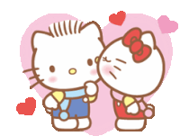
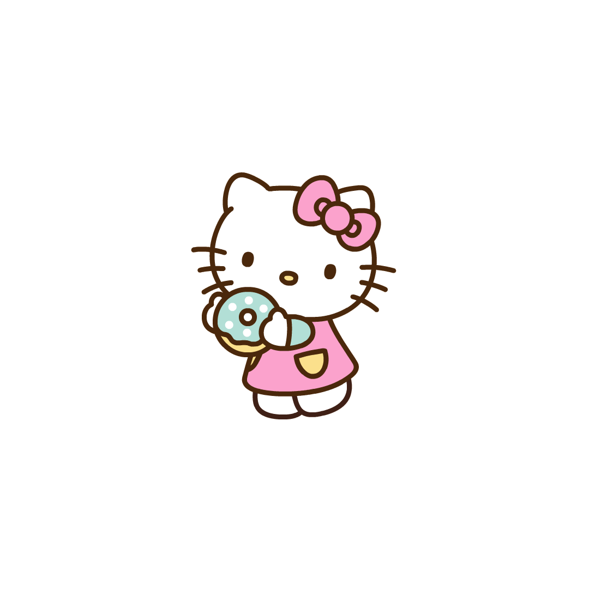

Top 5 Sanrio Characters OAT (Of All Time)
Table of Contents
- Introduction
- Explaining Sanrio
- Listing Sanrio Films and Series
- Honorable Mentions
- Dear Daniel
- Gudetama
- Top Picks
- Tuxedo Sam
- Pompompurin
- Kuromi
- My Melody
- Hello Kitty
Note: Clicking the image will redirect you to the original image.
Sanrio is a Japanese entertainment company that is known for their series of films, tv specials, and iconic characters.
These films and tv specials include:
Honorable Mentions
-
Dear Daniel
- Dear Daniel is a Japanese male bobcat that is on of Hello Kitty's childhood bestfriend and boyfriend.
Why was he not higher on the list?His character does not show depth, he was only known as a companion. This makes his character come across as boring and forgettable. In my opinion, his character had potential but the production company turned it into a mediocre background character.
Note: Clicking the image will redirect you to the original image.
Details
Full Name Japanese Name Universe Birthday Daniel Star ディアダニエル (Dear Daniel) Hello Kitty Universe May 3rd -
Gudetama
- Gudetama is a genderless egg that gives off the impression of laziness due to them always being shown laying down.
Why was he not higher on the list?His character does not do anything but lay down and show laziness. Personally, I am not fond of laziness and I believe that their character has contributed to a rise of laziness. However, the character is popular because a lot of young people find it relatable.
Note: Clicking the image will redirect you to the original image.
Details
Full Name Japanese Name Universe Birthday Gudetama ぐでたま (Gudetama) Gudetama N/A
Maria's Top Picks
Note: In this list 1 is the LEAST peak and 5 is the MOST peak.
-
Tuxedo Sam
Tuxedo Sam is a penguin born in Antarctica, in the South Pole but immigrated to the country of England. He is fluent in English and Penguinese, he is always open to learning new languages.
What makes him worth of being on this list?Despite his short-lived relationship with Hello Kitty, Tuxedo Sam is a well-rounded and educated character who serves as an inspiration to the youth. I admire his sense of fashion, he collects bow ties and has a total of 365. Those attributes and his ability to build relationships with others in the Sanrio universe make him a strong and well-rounded character. He is a fan among the Sanio-loving community.
Note: Clicking the image will redirect you to the original image.
Details
Full Name Japanese Name Universe Birthday Tuxedo J. Orville Samuel タキシードサム (Takishīdosamu) Hapidanbui May 12th -
Pompompurin
Pompompurin is a yellow Golden Retriever who is the main protagonist of the Pompompurin universe. After making his debut, he quickly became a staple character in the Sanrio Universe, due to him having a nice, laid-back personality.
What makes him worth of being on this list?His adorable, endearing, and charming personality makes Pompompurin a beloved Sanrio character and is often in the ranks as being the most adored. He has a unique look and personality that makes him recognizable and different among those in the Sanrio universe, many saying that he resembles a pudding.
Note: Clicking the image will redirect you to the original image.
Details
Full Name Japanese Name Universe Birthday Pomupomupurin ポムポムプリン (Pomupomupurin) Pompompurin April 16th -
Kuromi
Kuromi is a white rabbit with a black devil-like tail and wears a black jester's hat with a pink skull that changes its expression to match her mood. Kuromi made her first appearance in 2005 as the antagonist in Onegai My Melody.
What makes her worth of being on this list?She is a symbol of alternative fashion and is seen as rebellious compared to the rest of the Sanio Universe, most of them being of sweet and innocent nature. This type of individualism attracts people who are interested in alternative fashion, anime culture, and social media aesthetics because of her edgy but cute vibe.

Note: Clicking the image will redirect you to the original image.
Details
Full Name Japanese Name Universe Birthday Kuromi クロミ, (Kuromi) My Melody October 31st -
My Melody
My Melody is a white rabbit who wears a red or pink hood that covers her head and has a bow or flower on her right ear. She was first introduced to the Sanrio Universe in 1975, she is mainly marketed at young girls due to her girly and bubbly image and personality.
What makes her worth of being on this list?Her bubbly, good-natured, and honest personality makes her a good influence on young girls, she often promotes family values and encourages positive relationships amongs her friends. My melody is a standalone figure that does not need more sets of characters to make her stand out.
Note: Clicking the image will redirect you to the original image.
Details
Full Name Japanese Name Universe Birthday My Melody マイメロディ(Mai Merodi) My Melody January 18 -
Hello Kitty
Hello Kitty is the main character in her own media franchise and is Sanrio's longest mascot. Hello Kitty made her debut in 1974 and is one of Sanrio's first known characters, she is potrayed as a female anthropomorphic white Japanese Bobtail cat with a red bow worn on her left ear and usually wears blue overalls with a yellow shirt. She is known for her ability to speak despite not having a visible mouth.
What makes her worth of being on this list?She is the most popular and recognizable characters in the Sanrio Universe due to her simple design, universal appeal, and association to popular emotions. The fact that she does not have a mouth has left fans with their own interpretations, with some making conspiracy theories. Overall, Hello Kitty is one of the most popular characters, especially among youth, due to her large variety of merchandise available to a variety of audiences.
Note: Clicking the image will redirect you to the original image.
Details
Full Name Japanese Name Universe Birthday Kitty White ハローキティ(Harō Kitī) Hello Kitty Universe November 1